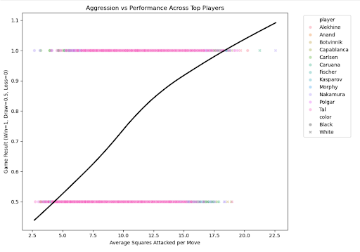
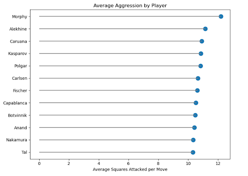
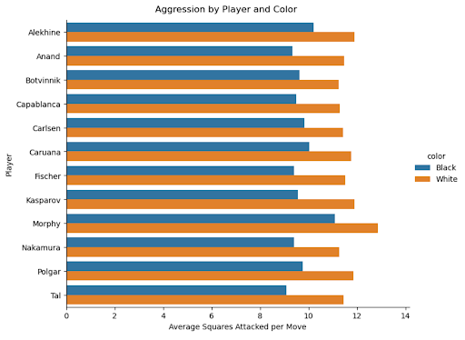
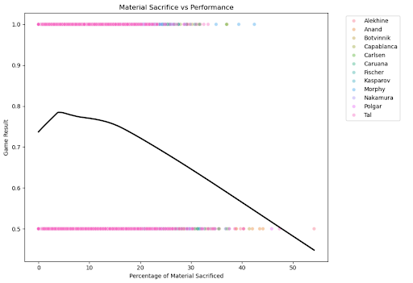
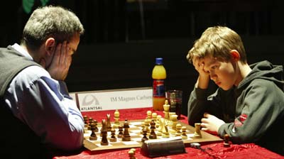

The Quiet Math Behind "Attacking" in Chess
By Aryan Achuthan | January 06, 2026

Introduction
As a National Chess Master with over a decade of experience, my own relationship with aggression in chess has always been complicated. My natural style has leaned toward positional play: slow improvements, structural pressure, and long endgames rather than sharp attacks or speculative sacrifices. Yet throughout my chess career, I was often told some version of the same advice: attacking chess wins games.
That claim is deeply ingrained in chess culture. We celebrate brilliant sacrifices, initiative, and king attacks, and many of the game’s most iconic figures are remembered for their aggression. Still, in my own experience, the games I won most reliably rarely came from forcing attacks. They came from accumulating small advantages and restricting my opponent’s options over time.
This tension raised a genuine question for me, not just as a player but as an analyst: does aggression actually lead to better results at the highest levels of chess? And more personally, would adopting a more aggressive style meaningfully improve results?
To explore these questions, I analyzed over 20,000 classical games played at the elite level by twelve of the greatest players in chess history spanning the 19th century through the modern era, examining how measurable forms of aggression relate to performance across eras, players, and game contexts.
Defining Agression in Chess
Aggression in chess is notoriously difficult to quantify. Rather than relying on subjective labels, this analysis focuses on two measurable proxies:
- 1. Positional Agression: Measured as the average number of squares attacked per move, normalized across games. This captures pressure, initiative, and piece activity. Squares attacked were computed from legal move generation at each position, counting all defended or attacked squares regardless of piece value, and averaged per move to allow comparison across games of different lengths.
- 2. Material Agression: Measured as the percentage of material sacrificed over the course of a game. This reflects explicit risk taking, where a player willingly gives up material for dynamic compensation.
Game outcomes are encoded numerically, with wins counted as 1, draws as 0.5, and losses as 0. This allows performance to be analyzed continuously rather than as a binary outcome.
Does Aggression Correlate With Winning?
The most direct way to test whether aggression pays off is to compare aggressive play with actual results. Each point in this plot represents a single game, showing positional aggression against the final result. The smoothed trend line reveals the overall relationship across all players and eras.
The pattern is relatively clear: moderate increases in positional aggression are associated with better results, particularly moving from passive to actively contested positions. However, the relationship is not unbounded. Beyond a certain point, additional aggression yields diminishing returns, suggesting that pressure alone is not enough without accuracy.
This supports a familiar intuition among strong players: initiative matters, but only when it is sustainable.
Who Plays the Most Aggressive Chess?
While the global trend is informative, aggression has always been deeply personal in chess. Some players build their entire style around initiative, while others selectively use it.
This comparison highlights clear stylistic differences among the top twelve players. Figures like Alekhine and Morphy sit near the top of the aggression spectrum, consistently generating pressure across games. Others cluster closer to the mean, suggesting a more balanced or situational approach.
An interesting insight from the graphic is that Tal, celebrated for his legendary sacrifices, actually ranks near the bottom in average squares attacked per move. This highlights an important distinction: aggression and material sacrifice are not the same, a nuance often overlooked in the chess community. The pattern may reflect Tal’s style; his frequent sacrifices often leave him with fewer pieces on the board in the later stages of the game, naturally reducing the number of squares he can attack.
Importantly, high aggression does not automatically imply recklessness. Many of the most aggressive players also rank among the most successful, indicating that sustained pressure, when properly managed, can be a powerful strategy.
The Role of the First Move: White vs Black
Aggression is not deployed in a vacuum. Color matters. White begins the game with the initiative, and it is natural to ask whether aggressive tendencies persist when that advantage disappears.
Across nearly all players, aggression levels are higher with the white pieces. However, the magnitude of this difference varies significantly. Some players maintain a relatively aggressive posture even as Black, while others adopt a more restrained, reactive style.
As a competitive chess player myself, I’ve developed a natural tendency to play more conservatively with the black pieces, reflecting the inherent challenge of moving second. This suggests that aggression is not simply a function of opportunity, but also of philosophy. Certain players actively seek complications regardless of color, while others tailor their approach to the structural realities of the position.
Are Material Sacrifices Truly Rewarding?
Aggression is often equated with sacrifice, but these are not the same thing. A player can exert enormous pressure without ever giving up material. To isolate this distinction, the final analysis compares material sacrifice directly to performance.
Unlike positional aggression, material sacrifice shows a much weaker and more volatile relationship with results. While some sacrifices clearly lead to wins, many do not. Excessive material risk often correlates with lower average outcomes. Although this general idea has validity, it's important to note that sacrificial play does seem to have reward as seen from the positive correlation between material sacrificed and performance near the start of the graph.
This highlights a crucial distinction: pressure is generally rewarded; gambling is not. The most successful players are not those who sacrifice the most, but those who choose their moments carefully.
What This Tells Us About Top Level Chess
- Positional aggression, expressed through active pieces and pressure, is positively associated with success.
- Material sacrifice is situational and far less reliably rewarded.
- The strongest players use aggression as a tool, not a default.
- Initiative matters, but precision determines whether it pays off.
Modern chess, shaped heavily by engines and deep preparation, seems to favor controlled aggression rather than visually romantic risk taking. The legends of attacking chess succeeded not because they sacrificed often, but because they knew exactly when aggression was justified.
Conclusion
The analysis suggests that the traditional wisdom surrounding aggression in chess is only partially correct. Sustained positional pressure, active pieces, control of key squares, and initiative, is consistently associated with stronger results at the highest level. However, this relationship has clear limits. Beyond a certain point, additional aggression offers diminishing returns unless it is supported by precise calculation and structural soundness.
Material sacrifices, often seen as the hallmark of attacking play, are far less reliably rewarded. While they can be decisive in specific positions, excessive material risk introduces volatility rather than consistent strength. The most successful players are not those who sacrifice most often, but those who recognize when the position truly justifies it.
Ultimately, aggression in elite chess functions best as a tool rather than a default style. The strongest players in history did not win by attacking constantly, but by applying pressure selectively, with discipline and accuracy. At the highest level, victories are earned not by being sharper than the opponent, but by knowing exactly when aggression is necessary, and when restraint is stronger.